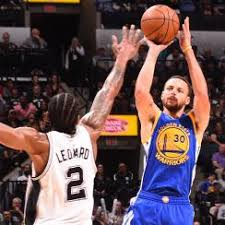

They are doing a nice work, and his best player "James Harden" can be the mvp.Almost a third of the way through the season, James Harden of the Houston Rockets may be the NBA’s Most Valuable Player. The wily guard, known to casual fans for the winter-in-Fairbanks beard he maintains in steamy Texas, is averaging 28.1 points and 11.6 assists per game—the former number good for fourth-best among all players, the latter the best mark in the league. He has led the Rockets to a solid record, 18 wins and seven losses, even though the Houston roster lacks a single complimentary All-Star, much less a superstar troika like the ones en vogue among the NBA’s ruling class. Without question, he is playing the best basketball of his career. Absent Harden, the Rockets could be one of the worst teams in the league; with him, they are one of the six or seven best. Harden’s improvement this season seems due less to personal growth than to a change in circumstances. Occasionally, over the last couple years, he feuded with the temperamental center Dwight Howard, a former leading man unenthusiastic about his sidekick role in Houston. Howard’s departure this past summer to Atlanta coincided with the arrival of a new coach, Mike D’Antoni, who during the 2000s had fashioned a revolutionary, fast-paced offense in Phoenix. D’Antoni looked at the Rockets with a newcomer’s fresh eyes and settled on a simple tactic: Give Harden the ball as much as he wants it.
They move on to playoffs
Everyone knows that James Harden just put together an incredible campaign in 2016-17. His work on offense was so brilliant, that if you take a deep dive into his season, you’ll come to the realization that no one in the history of the NBA has ever had a season on that end of the floor quite like The Beard. Harden, without another star by his side, was the nightly focal point of his opponents’ defensive game plan. But he had counters for anything and everything coaches threw at him in putting together one of the great scoring seasons you’ll ever see. You can probably count on one hand the guys that have scored as much and as efficiently as Harden did.
This is the funny mascot of the rockets..! # scary dude

The rockets had a bad time with the second game, but they wwill give the best for the next one.
The Spurs are in trouble without Leonard.... Despite getting blown out in Game 1 at home, the San Antonio Spurs are in position to win their second-round series against the Houston Rockets in six games, thanks to a thrilling overtime victory in Game 5 Tuesday night which put them up 3-2 in the series. Manu Ginobili played the hero, sneaking up from behind to stuff James Harden's potential tying 3-pointer in the closing second of the extra frame, preserving the Spurs' 110-107 victory. Making the win even more impressive was that they played the final 30 second of regulation and all of overtime without Kawhi Leonard, who sat with a sprained ankle he suffered late in the fourth quarter. After the game, Leonard unsurprisingly told reporters that he was planning to play in Game 6 in Houston on Thursday night. And while that is still likely the case, given the stakes of the game, the certainty of the matter has been thrown into doubt, as the Spurs announced Wednesday evening that Leonard is officially questionable for Game 6.
The Spurs didn't have Kawhi Leonard (ankle) for Game 6 of their NBA Western Conference playoff series in Houston. It didn't matter Leonard reportedly wanted to play, but Spurs coach Gregg Popovich chose to hold out his star player to ensure his health for a potential Game 7 in San Antonio, and for the rest of the playoffs. And there will be a rest of the playoffs after the underdog Spurs (+8.5) routed the Rockets 114-75 in Houston on Thursday night. SN has all the stats from Game 6, and the highlights from the contest are below. S

Watch the best clutch moments from the @warriors WCF Game 1 win. Durant and Curry combined for 19 4th quarter PTS.#NBAPlayoffs pic.twitter.com/W8SGEspiKQ
— NBA (@NBA) May 14, 2017
OAKLAND, Calif. -- Stephen Curry started the rally in the third to get Golden State going, then Kevin Durant was determined to do his part in the fourth. Two of the biggest stars on one side delivered when the best player on the other went down. Curry scored 40 points and hit a tying 3-pointer with 1:48 remaining, and the Warriors rallied from way behind after Kawhi Leonard was lost to an ankle injury to beat the San Antonio Spurs 113-111 on Sunday in Game 1 of the Western Conference finals. "It's the playoffs. You've got to expect everything," Curry said. "I wouldn't call it smooth sailing at all. We've actually had to execute and get to this point. They came out and challenged us heavy, put a nice little run together. It took us a minute to figure it out to get up to that game speed after this little break. It's definitely a nice way to win Game 1. We've got to capitalize off that and start Game 2 a lot better." Draymond Green gave Golden State the lead for good on a three-point play after the Warriors trailed by as many as 25 points. Leonard left in the third quarter after he re-injured his left ankle, and the Warriors capitalized with an 18-0 run. Durant scored 10 straight points during a key fourth-quarter stretch on the way to 34 points, while Zaza Pachulia had 11 points and nine rebounds. Leonard had 26 points and eight rebounds. LaMarcus Aldridge produced another clutch playoff performance with 28 points and eight boards. Somehow, these unusually careless, cold-shooting Warriors found a way to keep their unblemished postseason record alive at 9-0. Game 2 in the series is Tuesday night back at Oracle Arena. Curry scored 19 points in the third quarter and went 7 for 16 on 3s and 14 of 26 overall as the Warriors overcame their largest halftime deficit ever in the postseason at 20 points. Leonard first went down after stepping on a teammate's foot along the bench after taking a shot. Pachulia later slid toward him as he came down from shooting and Leonard fell into the Spurs bench, grabbing his ankle. Losing Leonard could be the story of this series, though coach Gregg Popovich had no update except that Leonard hurt the same foot. He shot 7 of 13 in 23 minutes to go with eight rebounds and three assists. He made all 11 of his free throws. He sat out Game 6 of the last round against Houston, a 39-point, series-clinching win on Thursday, after injuring the ankle in a Game 5 overtime victory.
 "

Cavs 117, Celtics 104 — Final LeBron James and the Cleveland Cavaliers cruised to a 117-104 victory over the Boston Celtics in Game 1 of the Eastern Conference Finals on Wednesday at the TD Garden. James went for 38 points, nine rebounds and seven assists. Kevin Love added 32 points and 12 rebounds. The Celtics, meanwhile, were led by Jae Crowder and Avery Bradley, who each scored 21 points. Isaiah Thomas and Al Horford combined 28 points on 11-of-30 shooting. Game 2 is set for Friday at 8:30 p.m. ET on TNT.LeBron James embarrassed every defender Boston threw at him and the Cleveland Cavaliers picked up where they left off following a long layoff, rolling to a 117-104 victory over the Celtics on Wednesday night in Game 1 of the Eastern Conference finals.James scored at will in the first half and the Cavs built a 26-point lead. Love opened up the floor for James, burying outside jumpers and forcing Boston to leave defenders one-on-one with James. Avery Bradley and Jae Crowder led the Celtics with 21 points each. Isaiah Thomas had 17 points. Boston missed 11 of its first 14 shots. Love averaged a quiet 13.8 points in the first two rounds, then broke out against a Boston team that knocked him out of the 2015 playoffs when he became tangled with Kelly Olynyk and dislocated his shoulder. The shoulder was working just fine Wednesday, and he scored in the paint and from the outside. Things got a little testy in the third quarter when Boston's Marcus Smart and Cleveland's Tristan Thompson got nose-to-nose and had to be separated by referees. Some jawing continued briefly before James stepped in to pull Thompson away. Smart and Thompson were called for double technical on the play, but got tangled again a few minutes later. This time, Smart fell to the floor during that exchange, drawing a foul on Thompson. The Celtics found some energy after the incident, closing the third quarter on an 11-3 run to pull to 92-75. ADVERTISING.It didn't last long, though, as the Cavs quickly got the lead back up to 20. James picked apart every defender that the Celtics threw at him in the first half. He backed down defenders to set up 15-foot fade away jumpers. Other times, he simply took defenders off the dribble or sliced through double-teams on the way to layups. Boston also seemed content to make every switch created by Cleveland screens, leading to some awkward matchups for James in the first half. In one such instance, Olynyk found himself one-on-one with James, who promptly drove past him and drew a foul at the rim. The Celtics couldn't get anything working when they had the ball, held to just 35 percent from the field in the first half and 2 for 16 from beyond the arc. The Cavs also held Thomas at bay offensively. He was 3 for 11 overall and 1 for 4 from the 3-point line after 24 minutes. TIP-INS Cavaliers: Since Game 5 of NBA finals, Cleveland has won a franchise-record 12 straight playoff games. ... The Cavs hold a 33-4 playoff record against Eastern Conference opponents (16-3 on the road) Celtics: Finished with 14 turnovers, and were outrebounded 32-27. ... Lost at home for the first time since Game 2 of first round against Chicago.
Cleveland and Warriors are going for Everything (Click to learn more!)